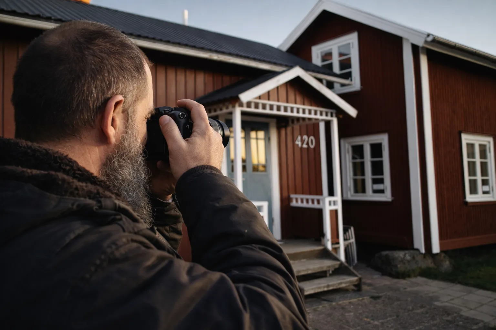
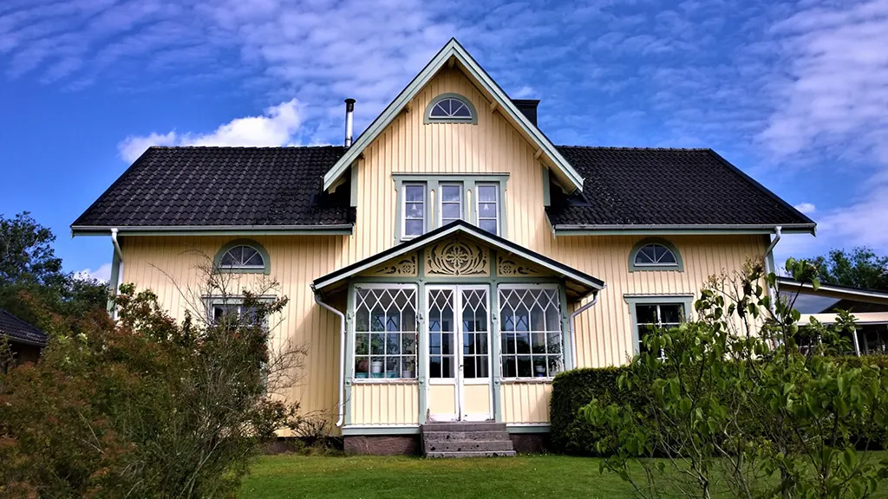
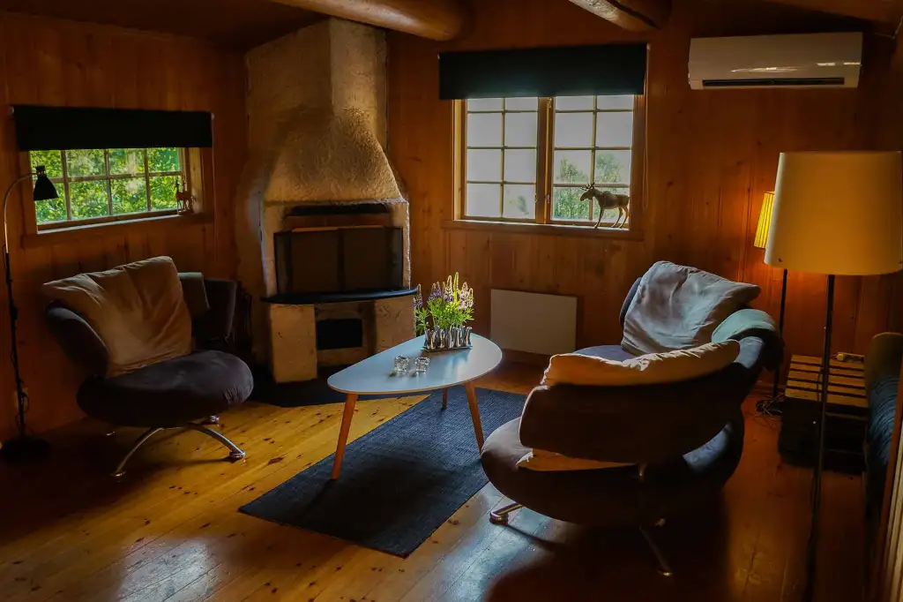
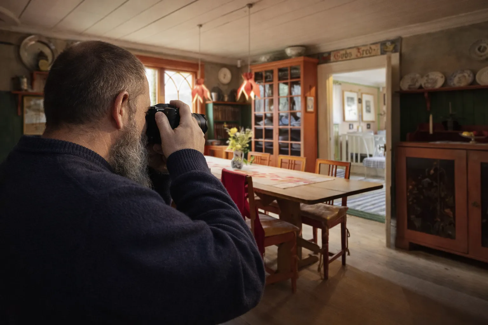
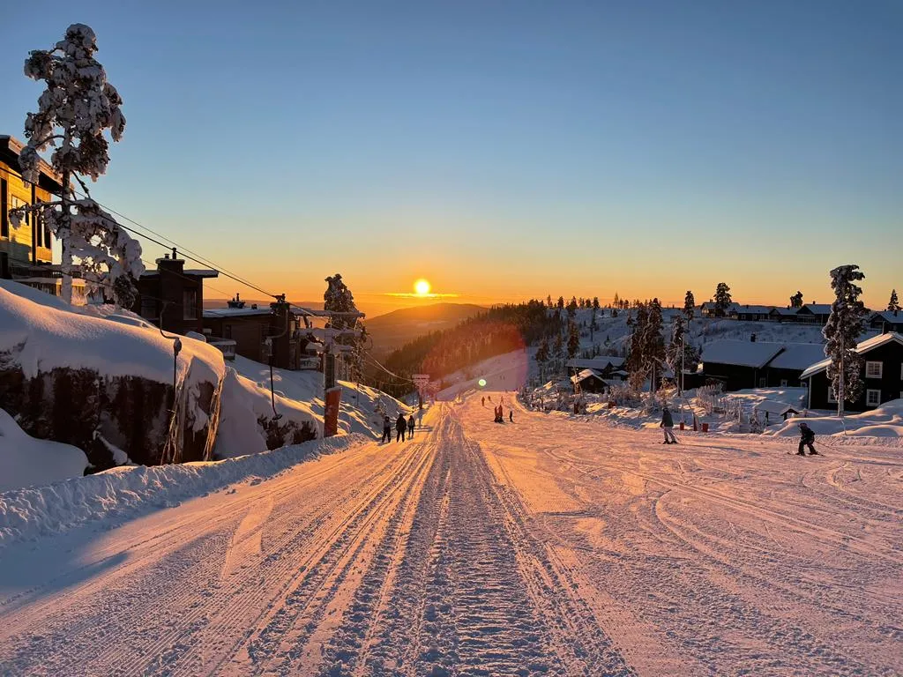
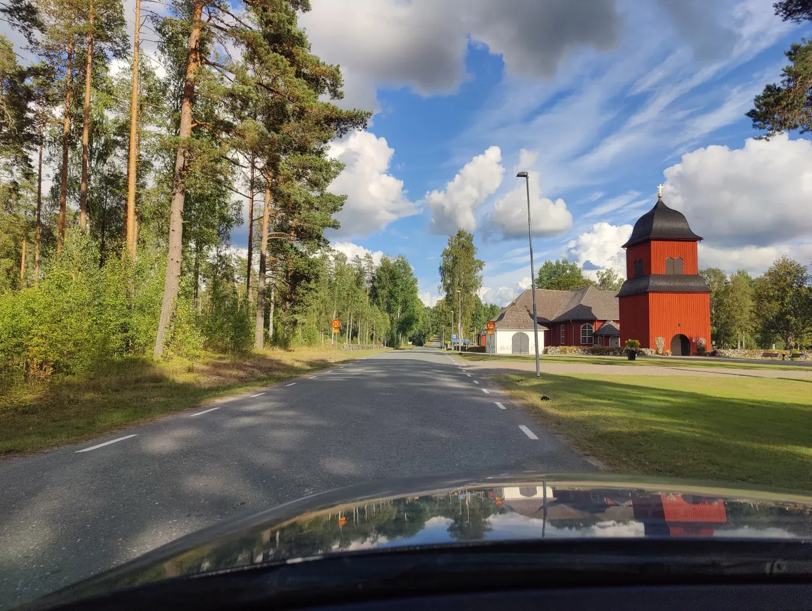
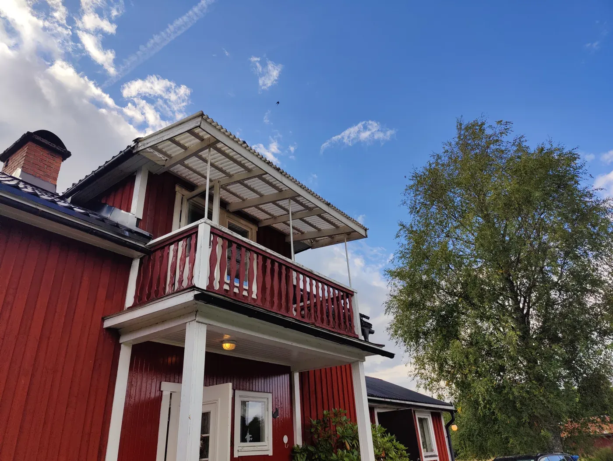
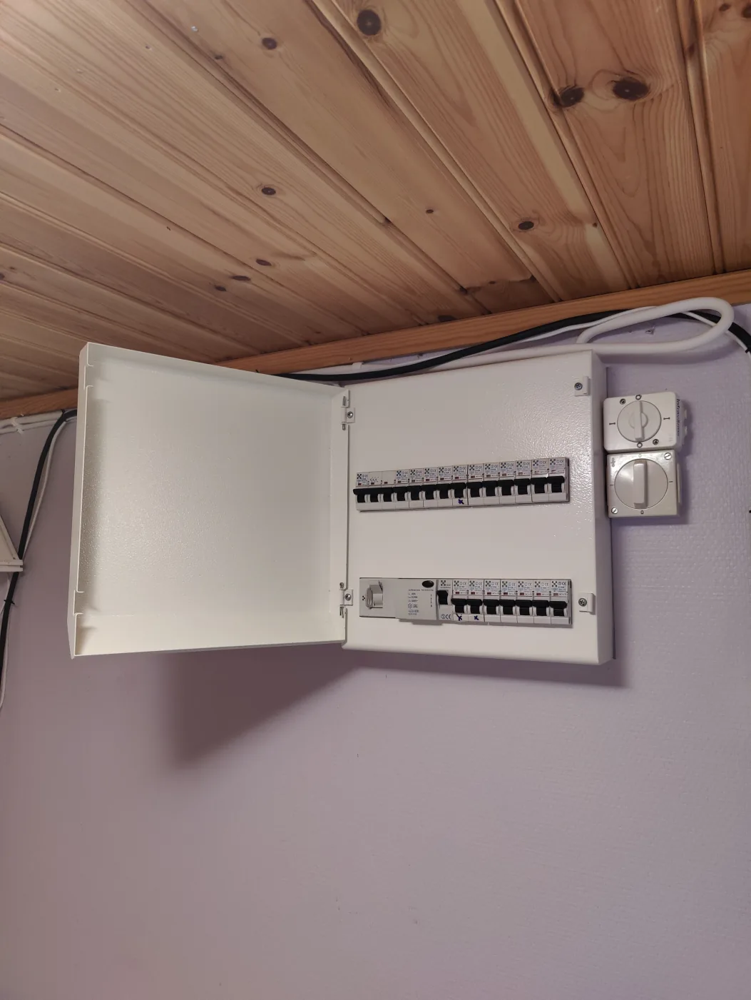
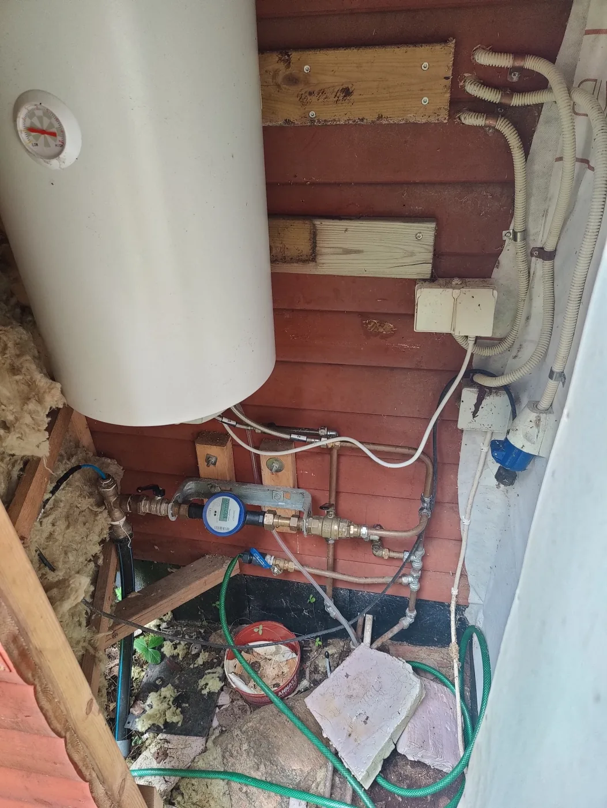

Skicka bostadsannonsen
Skicka annonsen och berätta vilka frågor eller funderingar som är viktigast för dig.
HUSKONTROLL VÄRMLAND
Praktisk visningshjälp på plats för köpare som har svårt att själva besöka en fastighet i Värmland.
VARFÖR HUSKONTROLL?
Annonser på nätet ger mycket information, men visar sällan allt du vill veta innan du reser långt för att titta på ett hus.
Med Huskontroll Värmland kan jag besöka fastigheten åt dig och ge ett praktiskt intryck av huset, det synliga skicket och den närmaste omgivningen.
SÅ FUNGERAR DET
Skicka annonsen och berätta vilka frågor eller funderingar som är viktigast för dig.
Jag tittar på fastigheten och omgivningen ur ett praktiskt perspektiv och dokumenterar det som är synligt.
Du får foton, video och tydliga iakttagelser så att du kan avgöra om fastigheten är värd nästa steg.
VAD JAG KAN TITTA PÅ
Taklinje, fasad, fönster, tillträde, synligt slitage och det allmänna skicket runt byggnaden.
Synligt skick på rum, golv, väggar, kök, badrum och andra utrymmen som går att komma åt.
Synliga installationer för värme, vatten och el, där de kan observeras utan specialisttester.
Tillfartsvägar, närmiljö, terräng och andra praktiska intryck runt fastigheten.
Om något i annonsen är oklart kan jag titta extra noga på det under besöket.
Extra bildmaterial hjälper dig att jämföra annonsen med hur fastigheten faktiskt ser ut på plats.
EN HUSKONTROLL I PRAKTIKEN
Verkliga exempel på detaljer, interiörer och omgivningar som kan dokumenteras under en visning.









TYDLIG ÅTERKOPPLING
Målet är att ge dig ett realistiskt första intryck och lyfta fram synliga praktiska punkter som kan behöva mer uppmärksamhet innan du bokar en resa, lägger ett bud eller ordnar en professionell besiktning.
Använd formuläret för att markera vad du vill få fotograferat, kontrollerat eller diskuterat under besöket.
TYDLIGA UTGÅNGSPUNKTER
Tidsåtgång och pris beror på fastigheten, resavståndet och checklistan du vill få genomgången. Dessa preliminära paket gör skillnaderna tydligare.
GRUNDKONTROLL
Från 1 995 SEK
Resekostnad tillkommer: 5 SEK/km.
För en mindre fastighet eller en avgränsad lista med prioriteringar.
UTÖKAD HUSKONTROLL
Från 3 495 SEK
Resekostnad tillkommer: 5 SEK/km.
För köpare som vill ha en bredare bild innan de reser eller bestämmer nästa steg.
ANPASSAD KONTROLL
På förfrågan
För avlägsna fastigheter, särskilda frågor eller en lång lista med punkter att titta på.
KÖPA HUS PÅ DISTANS?
Skicka länken till fastigheten och berätta vad du främst funderar över. Sedan kan jag föreslå en praktisk checklista och en realistisk prisuppskattning.
HAR DU EN FASTIGHET I ÅTANKE?
Berätta var fastigheten ligger och vad du vill veta. Sedan kan jag bekräfta vad som är möjligt och göra en tydlig överenskommelse med dig.